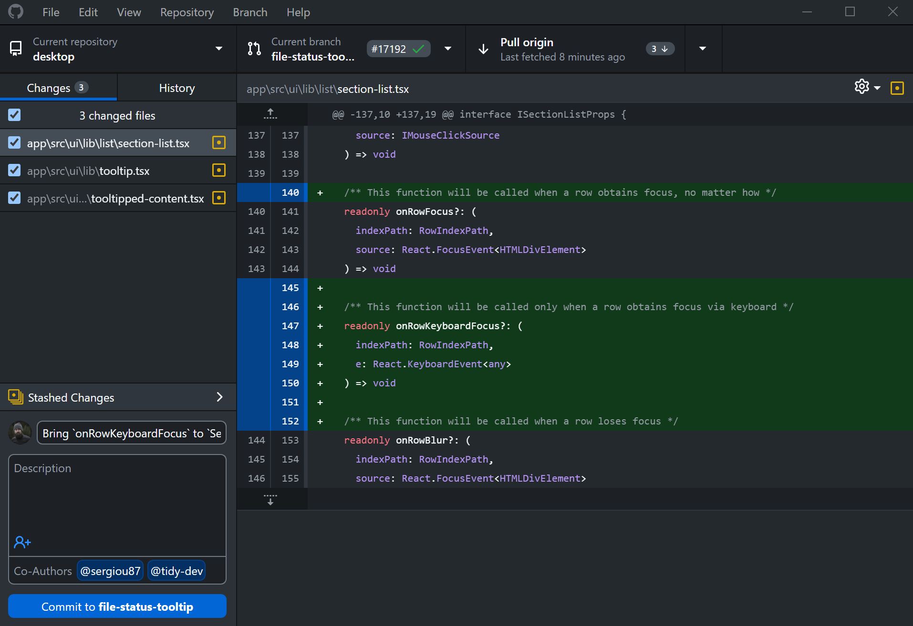

Where It Excels
Fast onboarding, simple branch/commit UX, and direct pull request handoff into GitHub.
Developer Tool Deep Dive
GitHub Desktop is a simplified Git client designed around everyday branch, commit, and pull request workflows for teams that collaborate in GitHub-hosted repositories.
Fast onboarding, simple branch/commit UX, and direct pull request handoff into GitHub.
Less depth for advanced repository surgery compared with power-user Git clients or direct CLI.
Strong with trunk-based and GitHub Flow where short-lived branches and PR checks are standard.
Good local companion to GitHub review gates and FlexDeploy webhook-driven promotion pipelines.

Developers commit and sync quickly with clear changed-file and diff context.
Teams open pull requests after local validation while governance remains in GitHub rules and approvals.
Useful for preparing forward-fix branches after rollback, then handing back to controlled PR merges.